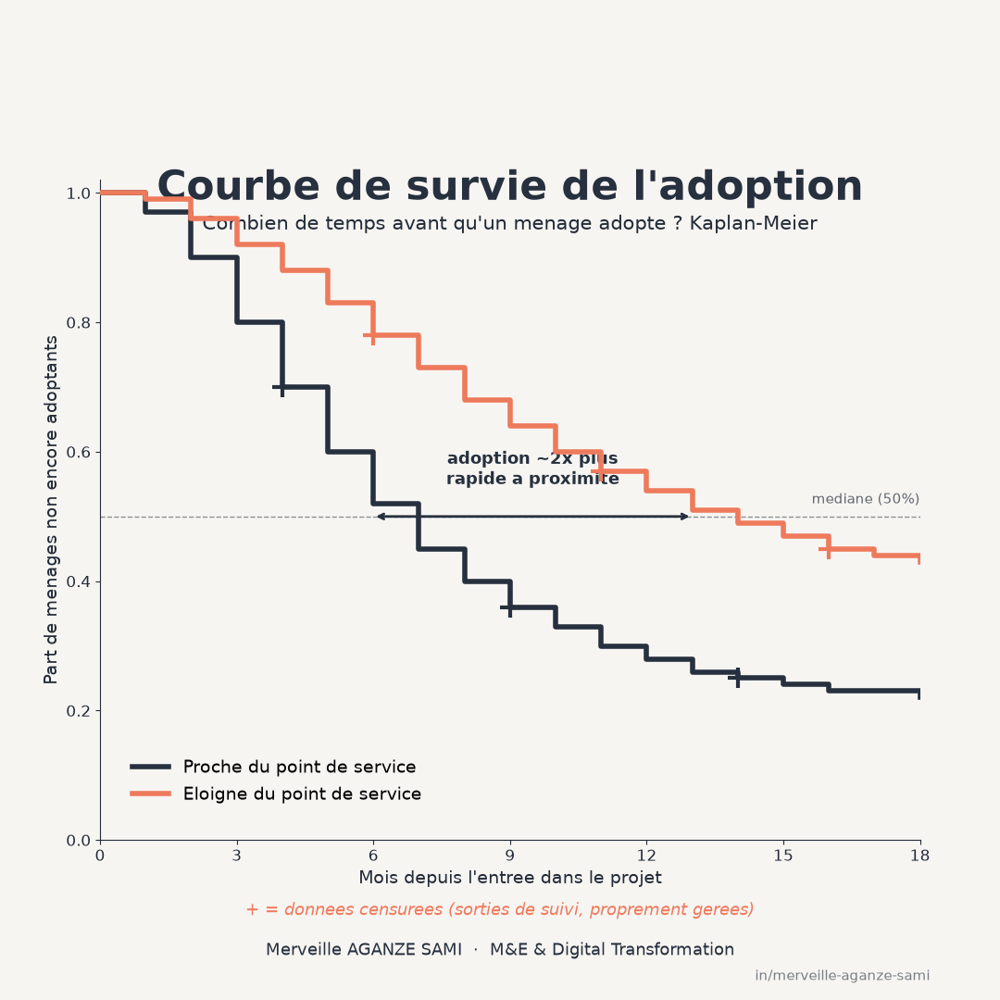

Les dispositifs de suivi rendent généralement compte de l'adoption d'une pratique par un taux mesuré en fin de période : la proportion de ménages ayant adopté. Cette mesure présente l'inconvénient d'être un état, alors que le phénomène étudié est un processus qui se déploie dans le temps.
Deux projets affichant le même taux final peuvent recouvrir des dynamiques opposées : dans l'un, la majorité des adoptions s'est produite dans les trois premiers mois ; dans l'autre, elle s'est étalée sur deux ans. Ces deux situations n'appellent ni le même diagnostic ni la même décision opérationnelle.
1. Le problème que pose le calcul d'un taux
Une difficulté technique s'ajoute à cette perte d'information. Tous les ménages ne sont pas observés pendant la même durée : certains rejoignent le dispositif en cours de route, d'autres en sortent — déménagement, retrait, fin de la période d'observation. Au moment du calcul, on sait seulement qu'ils n'avaient pas adopté jusque-là.
La censure à droite. Ces observations partielles ne sont ni des adoptions ni des non-adoptions : elles constituent une information de durée minimale. Les exclure du calcul supprime des données valides et biaise le résultat ; les compter comme non-adoptions revient à affirmer une information dont on ne dispose pas. Les méthodes d'analyse de survie sont précisément construites pour exploiter cette information partielle.
2. Estimer la courbe d'adoption
L'estimateur non paramétrique de référence reconstruit la probabilité de ne pas encore avoir adopté à chaque instant, en actualisant cette probabilité à chaque événement observé et en retirant du dénominateur les unités censurées (Kaplan & Meier, 1958). Le résultat est une courbe en escalier dont la lecture fournit directement des grandeurs opérationnelles.
La plus utile est le temps médian — la durée au terme de laquelle la moitié des ménages a adopté. Une moyenne n'est généralement pas calculable en présence de censure, puisque la durée reste inconnue pour une partie de l'échantillon. La comparaison entre deux groupes s'effectue par un test dédié comparant l'ensemble des courbes plutôt qu'un point particulier (Bland & Altman, 2004).
3. Quantifier l'effet des facteurs
Le modèle à risques proportionnels permet d'estimer l'effet de plusieurs caractéristiques sur le rythme d'adoption — distance au point de service, composition du ménage, modalité d'accompagnement — sans imposer de forme particulière à la courbe de base (Cox, 1972). Chaque coefficient s'interprète comme un rapport de taux instantané : une valeur de 1,5 indique un rythme d'adoption supérieur de moitié, à autres caractéristiques comparables.
Une précision d'interprétation s'impose ici. Le modèle décrit une association conditionnelle, non un effet causal. Attribuer à un facteur un rôle causal requiert un dispositif d'identification distinct, comme celui présenté dans l'article sur l'appariement par score de propension.
4. Vérifier l'hypothèse du modèle
Le modèle suppose que le rapport de taux entre deux profils reste constant dans le temps. Cette hypothèse est vérifiable au moyen d'un examen des résidus, et elle est fréquemment violée en pratique : un accompagnement de proximité peut accélérer fortement l'adoption les premiers mois puis n'avoir plus d'effet différencié (Grambsch & Therneau, 1994).
Lorsque l'hypothèse ne tient pas, deux réponses existent : stratifier le modèle selon la variable concernée, ou introduire un terme d'interaction avec le temps. Signaler la violation sans la traiter conduit à des coefficients dont l'interprétation n'est pas celle annoncée.
5. Points à traiter dans un dispositif de terrain
- Définition de l'événement. « Adopter » doit correspondre à un critère observable et daté. Une définition floue produit une variable de durée dont la mesure varie selon l'enquêteur.
- Censure par intervalle. Lorsque les visites de suivi sont périodiques, on sait seulement que l'adoption est survenue entre deux passages. Traiter la date de visite comme la date d'événement introduit un biais systématique ; des méthodes adaptées à la censure par intervalle existent et devraient être utilisées lorsque l'espacement des visites est important.
- Censure informative. Si les ménages qui sortent du suivi sont précisément ceux qui n'auraient pas adopté, l'estimation est biaisée de façon optimiste. Les motifs de sortie doivent être enregistrés et analysés.
- Risques concurrents. Un ménage qui quitte la zone ou abandonne l'activité ne se trouve pas dans la même situation qu'un ménage encore susceptible d'adopter. Traiter ces sorties comme de simples censures surestime la probabilité d'adoption ; des estimateurs tenant compte des événements concurrents corrigent ce biais (Fine & Gray, 1999).
- Corrélation intra-village. Les ménages d'une même localité partagent des déterminants non observés. Les erreurs-types doivent en tenir compte, faute de quoi la précision est surestimée.
6. Intégration dans l'outil de collecte
La condition pratique est simple mais souvent absente : le formulaire de collecte doit enregistrer des dates d'événement, et non un statut binaire à la date de visite. Cette modification, mineure sur le plan de l'outil, conditionne l'ensemble de l'analyse. Chaque visite horodatée alimente alors une courbe qui se met à jour à mesure que les données arrivent (Clark et al., 2003).
Le tableau de bord passe ainsi d'un indicateur d'état — la cible est-elle atteinte — à un indicateur de rythme, qui signale un ralentissement avant que le taux final ne soit compromis.
Points essentiels
- Un taux final agrège deux dynamiques très différentes : rapide puis stable, ou lente et continue
- Les sorties de suivi sont une information de durée minimale, non des non-adoptions
- Le temps médian est la grandeur lisible ; la moyenne est généralement non calculable
- Le modèle à risques proportionnels décrit une association, pas un effet causal
- Le formulaire doit enregistrer des dates d'événement, non un statut à la date de visite
En suivi de programme, la question du « combien » recouvre fréquemment une question de « quand » plus directement actionnable. Mesurer un rythme permet d'intervenir en cours de processus ; mesurer un état ne permet que d'en rendre compte après coup.
Références
- Bland, J. M., & Altman, D. G. (2004). The logrank test. BMJ, 328(7447), 1073. doi.org/10.1136/bmj.328.7447.1073
- Clark, T. G., Bradburn, M. J., Love, S. B., & Altman, D. G. (2003). Survival Analysis Part I: Basic concepts and first analyses. British Journal of Cancer, 89(2), 232–238. doi.org/10.1038/sj.bjc.6601118
- Cox, D. R. (1972). Regression Models and Life-Tables. Journal of the Royal Statistical Society: Series B, 34(2), 187–202. doi.org/10.1111/j.2517-6161.1972.tb00899.x
- Fine, J. P., & Gray, R. J. (1999). A Proportional Hazards Model for the Subdistribution of a Competing Risk. Journal of the American Statistical Association, 94(446), 496–509. doi.org/10.1080/01621459.1999.10474144
- Grambsch, P. M., & Therneau, T. M. (1994). Proportional hazards tests and diagnostics based on weighted residuals. Biometrika, 81(3), 515–526. doi.org/10.1093/biomet/81.3.515
- Kaplan, E. L., & Meier, P. (1958). Nonparametric Estimation from Incomplete Observations. Journal of the American Statistical Association, 53(282), 457–481. doi.org/10.1080/01621459.1958.10501452

Merveille Aganze Sami
Conseillère MEL & Gestion de Bases de Données. Plus de 9 ans d'expérience en suivi-évaluation, SIG et digitalisation auprès d'organisations internationales (GIZ, Enabel) en RD Congo.
Un suivi d'adoption à structurer ?
Prendre contact